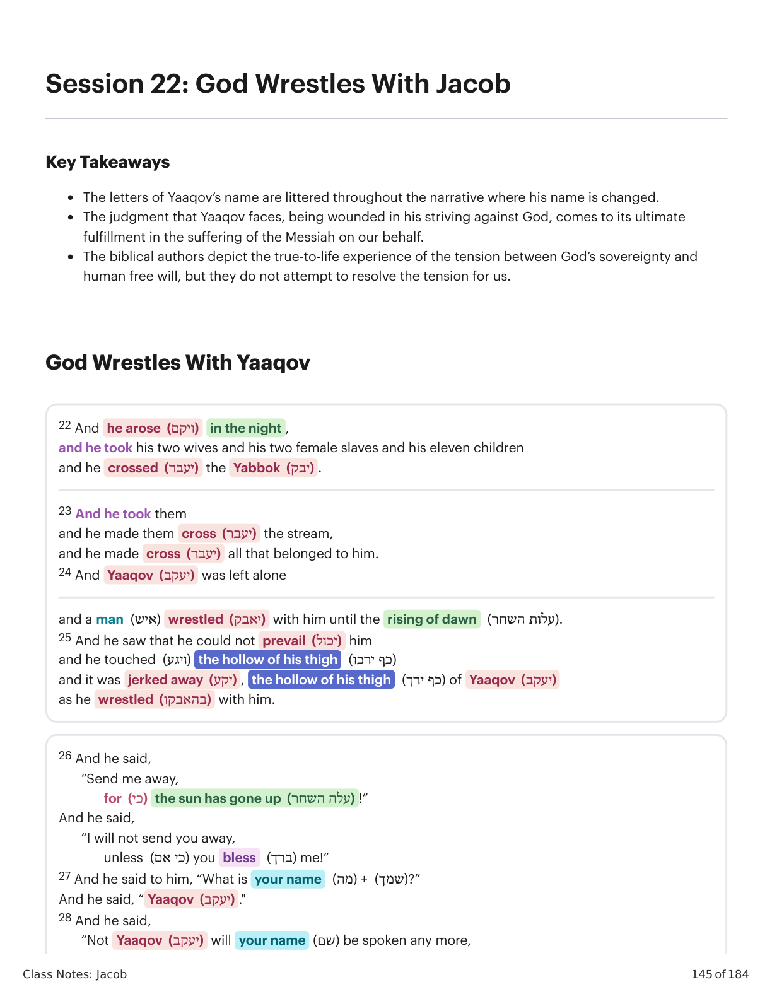
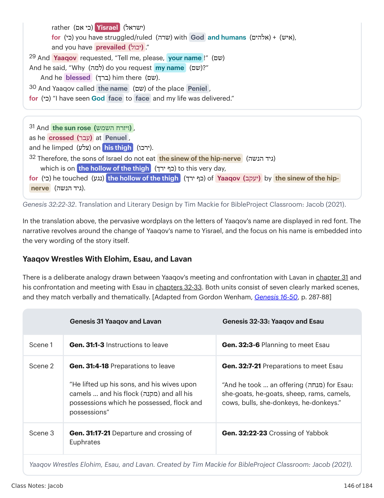
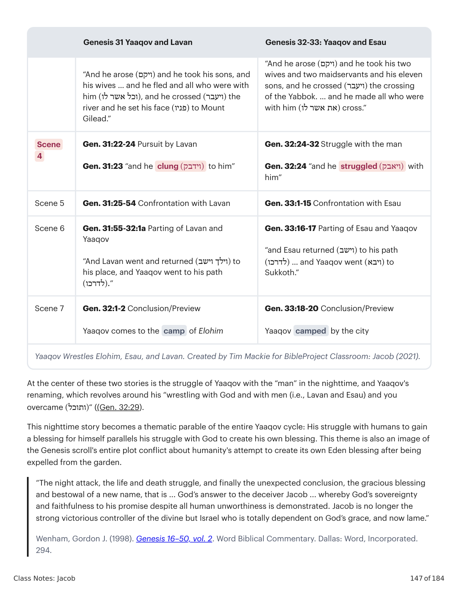
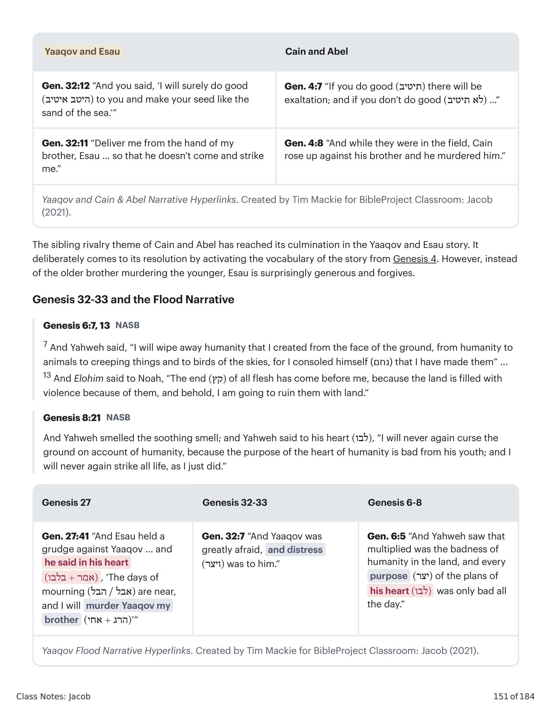
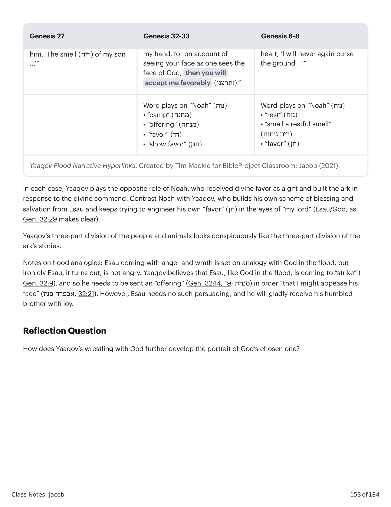

22 E ele se levantou de noite, e tomou suas duas mulheres, e suas duas servas, e seus onze filhos, e passou o Yabbok. 23 E tomou-os, e fez passar o riacho, e fez passar tudo o que lhe pertencia. 24 E Yaaqov ficou sozinho, e lutou com ele um homem, até o surgir da alva. 25 E viu que não podia prevalecer contra ele, e tocou a cavidade da sua coxa, e foi deslocada a cavidade da coxa de Yaaqov, como ele lutava com ele. 26 E disse: "Deixa-me ir, porque já a alva subiu." E ele disse: "Não te deixarei ir, se não me abençoares." 27 E disse-lhe: "Qual é o teu nome?" E ele disse: "Yaaqov." 28 E disse: "Não se dirá mais Yaaqov o teu nome, senão Yisrael, porque como príncipe lutaste com Deus e com os homens, e prevaleceste." 29 E pediu Yaaqov: "Dize-me, peço-te, o teu nome." E disse: "Por que perguntas pelo meu nome?" E abençoou-o ali. 30 E chamou Yaaqov o nome daquele lugar Peniel, porque disse: "Vi a Deus face a face, e a minha vida foi livrada." 31 E saiu o sol, quando ele passou por Penuel, e mancava da sua coxa. 32 Por isso os filhos de Israel não comem o nervo da articulação da coxa, que está na cavidade da coxa, até ao dia de hoje, porque tocou na cavidade da coxa de Yaaqov, no nervo da articulação.22 And he arose in the night, and he took his two wives and his two female slaves and his eleven children and he crossed the Yabbok. 23 And he took them and he made them cross the stream, and he made cross all that belonged to him. 24 And Yaaqov was left alone and a man wrestled with him until the rising of dawn. 25 And he saw that he could not prevail him and he touched the hollow of his thigh, and it was jerked away, the hollow of his thigh of Yaaqov as he wrestled with him. 26 And he said, "Send me away, for the sun has gone up!" And he said, "I will not send you away, unless you bless me!" 27 And he said to him, "What is your name?" And he said, "Yaaqov." 28 And he said, "Not Yaaqov will your name be spoken any more, rather Yisrael, for you have struggled/ruled with God and humans, and you have prevailed." 29 And Yaaqov requested, "Tell me, please, your name!" And he said, "Why do you request my name?" And he blessed him there. 30 And Yaaqov called the name of the place Peniel, for "I have seen God face to face and my life was delivered." 31 And the sun rose, as he crossed at Penuel, and he limped on his thigh. 32 Therefore, the sons of Israel do not eat the sinew of the hip-nerve which is on the hollow of the thigh to this very day, for he touched the hollow of the thigh of Yaaqov by the sinew of the hip-nerve.

Gênesis 32:22-32. Tradução e Design Literário por Tim Mackie para BibleProject Classroom: Jacó (2021).Genesis 32:22-32. Translation and Literary Design by Tim Mackie for BibleProject Classroom: Jacob (2021).
Na tradução acima, os trocadilhos onipresentes sobre as letras do nome de Yaaqov são exibidos em fonte vermelha. A narrativa gira em torno da mudança do nome de Yaaqov para Yisrael, e o foco em seu nome está embutido nas próprias palavras da história. Há uma analogia deliberada traçada entre o encontro e a confrontação de Yaaqov com Lavan no capítulo 31 e sua confrontação e encontro com Esaú nos capítulos 32-33. Ambas as unidades consistem em sete cenas claramente marcadas, e correspondem verbal e tematicamente.In the translation above, the pervasive wordplays on the letters of Yaaqov's name are displayed in red font. The narrative revolves around the change of Yaaqov's name to Yisrael, and the focus on his name is embedded into the very wording of the story itself. There is a deliberate analogy drawn between Yaaqov's meeting and confrontation with Lavan in chapter 31 and his confrontation and meeting with Esau in chapters 32-33. Both units consist of seven clearly marked scenes, and they match verbally and thematically.

Yaaqov Luta com Elohim, Esaú e Lavan. Criado por Tim Mackie para BibleProject Classroom: Jacó (2021).Yaaqov Wrestles With Elohim, Esau, and Lavan. Created by Tim Mackie for BibleProject Classroom: Jacob (2021).
A identidade do "homem" (heb. ish) é deixada para o leitor ponderar à luz de narrativas em outros lugares do rolo de Gênesis e à luz de outros detalhes dentro desta história. Quando Yahweh apareceu a Abraão por sua tenda em Manre, foi na forma de um homem (Gn 18:1-3). Outro homem misterioso guiará José a seus irmãos (Gn 37:15), o que José mais tarde vê como uma expressão de guia divina. O homem que luta com Yaaqov pode oferecer a bênção de Yahweh (32:29). Yaaqov descreve a experiência como "ver Elohim face a face!" (32:30). O fato de o homem ser Yahweh em forma humana apenas torna a história mais enigmática. Como é que Deus não pode "prevalecer" sobre Yaaqov? E por que Deus teria de ferir Yaaqov na virilha para feri-lo? Estes detalhes da história são um enigma intencional destinado a oferecer um comentário sobre as histórias ao redor.The identity of the man (Heb. ish) is left for the reader to ponder in light of narratives elsewhere in the Genesis scroll and in light of other details within this story. When Yahweh appeared to Abraham by his tent in Mamre, it was in the form of a man, see Gen. 18:1-3. Another mysterious man will guide Joseph to his brothers, which Joseph later sees as an expression of divine guidance. The man who wrestles with Yaaqov can offer Yahweh's blessing. Yaaqov describes the experience as "seeing Elohim face to face!" The fact that the man is Yahweh in human form only makes the story more puzzling. How is it that God cannot "prevail" over Yaaqov? And why would God have to strike Yaaqov in the crotch to wound him?
Deus falou uma palavra de bênção e escolha sobre Yaaqov antes dele nascer. E ainda assim, desde seus primeiros momentos, Yaaqov tem agarrado pela posição da bênção do primogenito. Este "agarrar pelo calcanhar" continuou no engano de Rivqah e Yaaqov, no engano de Yaaqov a Lavan, e agora em sua tentativa de subornar o perdão de Esaú. Em cada ponto, Deus permite que o engano de Yaaqov se volte contra ele, trazendo mais dor e isolamento. E ainda Yaaqov nunca parece aprender. Ele apenas repete seus velhos caminhos. E assim Deus se envolve pessoalmente e fere Yaaqov tão completamente que ele não pode se recuperar. Esta história é uma imagem vívida da jornada de Deus com a humanidade como um todo e com seu povo escolhido em particular. O propósito de Deus é abençoar, e esse propósito continua esbarrando na incapacidade da humanidade de confiar nas intenções generosas de Deus. Em vez disso, Yaaqov continua arquitetando como se a bênção última dependesse dele. Por que um golpe na virilha? Quando Abraão estava preocupado com o futuro de sua família, fez seu servo jurar colocando a mão "sob minha coxa" (Gn 24:2). Esta é precisamente a região da virilha de Yaaqov atingida pelo homem divino. É um golpe na região reprodutiva. Deus respondeu ao pecado de Abraão e Sara contra Hagar com juízo e misericórdia através da circuncisão. De modo semelhante, Deus responde duramente ferindo Yaaqov na mesma área. Yaaqov andará mancando, para sempre ferido.God spoke a word of blessing and choice over Yaaqov before he was born. And yet, from his first moments, Yaaqov has been seizing for the position of the firstborn blessing. This "heel grabbing" continued in Rivqah and Yaaqov's deception, in Yaaqov's deception of Lavan, and now in his attempt to bribe forgiveness from Esau. At each point, God allows Yaaqov's deceit to turn back upon him, bringing more pain and isolation. And yet Yaaqov never seems to learn. He just repeats his old ways. And so God gets personally involved and wounds Yaaqov so thoroughly he cannot recover. This story is a vivid image of God's journey with humanity as a whole and with his chosen people in particular. God's purpose is to bless, and that purpose keeps bumping up against humanity's inability to trust God's generous intentions. Instead, Yaaqov keeps scheming as if the ultimate blessing is up to him. When Abraham was concerned about the future of his family, he made his servant swear an oath by "placing your hand under my thigh" (Gen. 24:2). This is precisely the region of Yaaqov's crotch struck by the divine man. It's a strike to the reproductive region. God responded to Abraham and Sarah's sin against Hagar with judgement and mercy through circumcision. In a similar way, God responds harshly by wounding Yaaqov in the same area. Yaaqov will walk with a limp, forever wounded.

Yaaqov Luta com Elohim, Esaú e Lavan. Criado por Tim Mackie para BibleProject Classroom: Jacó (2021).Yaaqov Wrestles With Elohim, Esau, and Lavan. Created by Tim Mackie for BibleProject Classroom: Jacob (2021).
A mudança de nome é enormemente significativa. O significado de toda a vida de Yaaqov até este ponto está compactado nesta pequena narrativa e neste novo nome. Yaaqov = "calcanhar", isto é, "agarrrador pelo calcanhar, trapaceiro". Yisrael = "ele luta com El". "Nomes em toda a Escritura são significativos, mas mudanças de nome em meia-idade são especialmente assim (cf. Abram/Abraão e Sarai/Sara em 17:5, 15). Aqui o novo nome de Jacó se tornaria o nome da nação, e está carregado de significado. Israel, 'Deus luta ou governa', é aqui reinterpretado como uma referência à luta de Jacó com Deus. Yet this reinterpretation captures the paradox of Jacob's struggle precisely. For while Jacob struggled with God, it was God who allowed Jacob to triumph in the fight... Jacob's experience at the Yabbok, wrestling with God and yet surviving, was in later times seen as prefiguring the national experience (Hos. 12:5)."The name change is hugely significant. The meaning of Yaaqov's entire life up to this point is packed into this little narrative and into this new name. Yaaqov = "heel-er," i.e., "heel-grabber, trickster". Yisrael = "he struggles with El". "Names throughout Scripture are significant, but changes of name in midlife are specially so (cf. Abram/Abraham and Sarai/Sarah in 17:5, 15). Here Jacob's new name was to become the nation's name, and it is fraught with significance. Israel, 'God fights or rules,' is here reinterpreted as a reference to Jacob's struggle with God. Yet this reinterpretation captures the paradox of Jacob's struggle precisely. For while Jacob struggled with God, it was God who allowed Jacob to triumph in the fight... Jacob's experience at the Yabbok, wrestling with God and yet surviving, was in later times seen as prefiguring the national experience (Hos. 12:5)."
Toda a sequência de Gênesis 32-33 está sobreposta com referências verbais de volta aos padrões centrais de Gênesis 1-11. Tanto a narrativa de Yaaqov quanto a de Adão retratam um humano solitário que é incapaz de cumprir o propósito de Deus por si mesmo. Assim Deus vem de modo misterioso e vívido e realiza um "procedimento" surpresa que abre o caminho para a bênção. Yaaqov e Esaú ativam o vocabulário da história de Caim e Abel (Gn 4), mas, em vez do irmão mais velho assassinar o mais novo, Esaú surpreendentemente é generoso e perdoa. Gênesis 32-33 e a narrativa do dilúvio: Yaaqov desempenha o papel oposto de Noé, que recebeu o favor divino como dom e construiu a arca em resposta ao mandamento divino. Contrasta Noé com Yaaqov, que constrói seu próprio esquema de bênção e salvação de Esaú e continua tentando maquinaria seu próprio "favor" aos olhos de "meu senhor" (Esaú/Deus). A divisão de três partes de Yaaqov do povo e dos animais se assemelha visivelmente à divisão de três partes dos andares da arca.The entire sequence of Genesis 32-33 is overlaid with verbal references back to the core patterns of Genesis 1-11. Both narratives portray a lone human who is unable to fulfill the purpose of God by themselves. So God comes in a mysterious, vivid way and performs a surprise "procedure" that opens up the pathway to divine blessing. The sibling rivalry theme of Cain and Abel has reached its culmination in the Yaaqov and Esau story. It deliberately comes to its resolution by activating the vocabulary of the story from Genesis 4. However, instead of the older brother murdering the younger, Esau is surprisingly generous and forgives. Genesis 32-33 and the Flood Narrative: In each case, Yaaqov plays the opposite role of Noah, who received divine favor as a gift and built the ark in response to the divine command. Contrast Noah with Yaaqov, who builds his own scheme of blessing and salvation from Esau and keeps trying to engineer his own "favor" in the eyes of "my lord" (Esau/God, as Gen. 32:29 makes clear). Yaaqov's three-part division of the people and animals looks conspicuously like the three-part division of the ark's stories.
| Yaaqov e EsaúYaaqov and Esau | Caim e AbelCain and Abel |
|---|---|
| Gn 33:10 "Rogo-te, agora, se achei graça aos teus olhos, então receberás a minha oferta (minchah) da minha mão ..."Gen. 33:10 "Please now, if I find favor in your eyes, then you will take my offering (minchah) from my hand ..." | Gn 4:3-6 Dois irmãos trazem uma oferta (minchah), um é favorecido e o outro não, resultando em ira e rivalidade fraternalGen. 4:3-6 Two brothers bring an offering (minchah), one is favored and one is not, resulting in anger and sibling rivalry |
| Yaaqov e a Narrativa de Caim & Abel Hiperlinks. Criado por Tim Mackie para BibleProject Classroom: Jacó (2021).Yaaqov and Cain & Abel Narrative Hyperlinks. Created by Tim Mackie for BibleProject Classroom: Jacob (2021). | |

Hiperligações da Narrativa de Caim e Abel de Yaaqov. Criado por Tim Mackie para BibleProject Classroom: Jacó (2021).Yaaqov and Cain & Abel Narrative Hyperlinks. Created by Tim Mackie for BibleProject Classroom: Jacob (2021).
| Gênesis 27Genesis 27 | Gênesis 32-33Genesis 32-33 | Gênesis 6-8Genesis 6-8 |
|---|---|---|
| Gn 27:42 "Eis que Esaú, teu irmão, está se consolando (נחם) a teu respeito, para te matar (הרג)."Gen. 27:42 "Behold, Esau your brother is consoling himself (נחם) regarding you, to murder you (הרג)." | Gn 6:6 "E Yahweh se consolou (נחם) por haver feito o humano na terra, e se entristeceu no seu coração (לבב)."Gen. 6:6 "And Yahweh consoled himself (נחם) that he made humanity in the land, and he was pained in his heart (לבב)." | |
| Gn 32:5 "Enviei a meu senhor, para achar graça aos teus olhos (למצא חן בעיניך)."Gen. 32:5 "I have sent to my lord, to find favor in your eyes (למצא חן בעיניך)." | Gn 6:8 "Mas Noé achou graça (חן מצא) aos olhos de Yahweh."Gen. 6:8 "But Noakh found favor (חן מצא) in the eyes of Yahweh." | |
| Gn 32:8 "e se ele ferir (נכה, Hiph. נכה) o acampamento, então o que restar (נשאר) escapará (פליטה)."Gen. 32:8 "and if he strikes it (נכה, Hiph. נכה) then there will the camp that remains (נשאר) as one who escapes (פליטה)." | O dilúvio é o "ferir (נכה) sobre toda a vida" de Deus (8:21), mas só Noé e sua família restam (נשאר, 7:23).The flood is God's "strike (נכה) on all life" (8:21), but only Noah and family "remains" (נשאר, 7:23). | |
| Gn 32:16 "E disse a seus servos: 'Passai adiante de mim, e ponde um espaço de descanso (רוח) entre rebanho e rebanho.'"Gen. 32:16 "And he said to his servants, 'Cross over before me, and place a space of rest (רוח) between flock and between flock.'" | Gn 8:1,4 Deus envia um "sopro/vento" (רוח) sobre as águas que recuam para a arca repousar (נוח) no monte.Gen. 8:1, 4 God sends out a "breath/wind" (רוח) over the waters which recede so the ark can "rest" (נוח) on the mountain. | |
| Gn 32:17-20 "E ordenou ao primeiro (הראשון) ... e ordenou ao segundo (השני) e também ao terceiro (השלישי) ... pois disse: 'Cobrirei o seu rosto (כפר) com a oferta (מנחה).'"Gen. 32:17-20 "And he commanded the first (הראשון) ... and he commanded the second (השני) and also the third (השלישי) ... for he said, 'I will cover his face (כפר) with the offering (מנחה).'" | Gn 6:14-16 "Faze para ti uma arca de madeira de gofer ... farás com baixos (תחתיות), segundos (עונת) e terceiros (שלישים)."Gen. 6:14-16 "Make for yourself an ark of gopher wood ... you will make it with lowers (תחתיות), seconds (עונת), and thirds (שלישים)." | |
| Gn 27:27 "[Yitskhaq] cheirou o aroma (וירח ריח) das vestes [de Yaaqov], e o abençoou."Gen. 27:27 "[Yitskhaq] smelled the aroma (וירח ריח) of [Yaaqov's] garments, he blessed him." | Gn 33:10 "Se achei graça aos teus olhos (מצאתי חן בעיניך), então recebe a minha oferta (מנחה) da minha mão."Gen. 33:10 "If I may find favor in your eyes (מצאתי חן בעיניך), then take my offering (מנחה) from my hand." | Gn 8:21 "Yahweh cheirou o aroma suave (וירח יהוה את ריח) e disse em seu coração..."Gen. 8:21 "Yahweh smelled the soothing aroma (וירח יהוה את ריח) and said in his heart..." |
| Hiperligações da Narrativa do Dilúvio de Yaaqov. Criado por Tim Mackie para BibleProject Classroom: Jacó (2021).Yaaqov Flood Narrative Hyperlinks. Created by Tim Mackie for BibleProject Classroom: Jacob (2021). | ||

Hiperligações da Narrativa do Dilúvio de Yaaqov. Criado por Tim Mackie para BibleProject Classroom: Jacó (2021).Yaaqov Flood Narrative Hyperlinks. Created by Tim Mackie for BibleProject Classroom: Jacob (2021).
Como a luta de Yaaqov com Deus desenvolve ainda mais o retrato do escolhido de Deus?How does Yaaqov's wrestling with God further develop the portrait of God's chosen one?